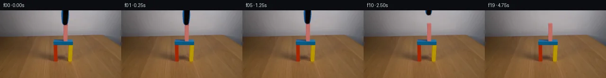

![首帧]()

Round 00
2026-11-05T18:29:04.619783+00:00像素候选变化代码 +154/−0inspection 更新
pixels 9487aa78c5911f05 · code 0b5aa0ee6b06831a
查看本轮 generate.py 真实 diff
--- previous/generate.py
+++ current/generate.py
@@ -0,0 +1,154 @@
+"""Source-pixel continuation: local matting, occlusion repair, vertical translation.
+No external data, pretrained model, renderer, or physics engine is used.
+"""
+from pathlib import Path
+import json
+import numpy as np
+from PIL import Image, ImageDraw
+import cv2
+from artifact_io import save
+
+ROOT = Path(__file__).resolve().parent
+SOURCE = np.asarray(Image.open(ROOT / 'first_frame.png').convert('RGB'))
+H, W = SOURCE.shape[:2]
+
+
+def clean_under_tool():
+ """Rebuild the small occluded gray wall and ~5 px of hidden pink top."""
+ clean = SOURCE.astype(np.float32).copy()
+ # Gray wall is locally smooth; retain its rowwise illumination variation.
+ for y in range(34):
+ left = SOURCE[y, 125:129].mean(axis=0)
+ right = SOURCE[y, 147:151].mean(axis=0)
+ for x in range(128, 147):
+ u = (x - 126.5) / 22.0
+ clean[y, x] = left * (1 - u) + right * u
+ # A short unseen upper end of the same pink block. Its lower visible
+ # face and all gate pixels come directly from the first frame.
+ scale = 8
+ mask = Image.new('L', (W * scale, 34 * scale), 0)
+ draw = ImageDraw.Draw(mask)
+ def poly(points, fill):
+ draw.polygon([(round(x*scale), round(y*scale)) for x,y in points], fill=fill)
+ poly([(133.65,28.1),(142.55,28.15),(142.55,34),(133.65,34)],255)
+ face_mask = np.asarray(mask.resize((W,34),Image.Resampling.LANCZOS),dtype=np.float32)/255
+ face = clean[:34].copy()
+ # Sample the actual pink face's column shading and slight texture.
+ palette = SOURCE[34:40].mean(axis=0).astype(np.float32)
+ for y in range(26,34):
+ for x in range(133,144):
+ face[y,x] = palette[x] + np.array([0.2,0.1,0.1]) * (34-y)
+ clean[:34] = clean[:34]*(1-face_mask[...,None])+face*face_mask[...,None]
+ # The narrow, softly lit top plane matches the perspective of the bar.
+ mask = Image.new('L',(W*scale,34*scale),0)
+ draw = ImageDraw.Draw(mask)
+ poly([(133.65,28.1),(134.45,26.95),(142.65,27.0),(142.55,28.15)],255)
+ top_mask = np.asarray(mask.resize((W,34),Image.Resampling.LANCZOS),dtype=np.float32)/255
+ top = np.empty_like(clean[:34]);top[:] = [205,126,119]
+ clean[:34] = clean[:34]*(1-top_mask[...,None])+top*top_mask[...,None]
+ # Rejoin the unmodified face smoothly over its final two repaired rows.
+ clean[32,133:144] = clean[32,133:144]*0.85 + SOURCE[32,133:144]*0.15
+ clean[33,133:144] = clean[33,133:144]*0.35 + SOURCE[33,133:144]*0.65
+ return clean
+
+
+def extract_tool(clean):
+ """Estimate an alpha matte from red-channel contrast against gray/pink.
+
+ Black and blue casing are opaque in the interior. Only their edge pixels
+ need unmixing from the background. This preserves the source tool texture.
+ """
+ alpha = np.zeros((H,W),dtype=np.float32)
+ source = SOURCE.astype(np.float32)
+ for y in range(33):
+ for x in range(128,147):
+ bg = clean[y,x]
+ src = source[y,x]
+ expected_r = 18.0 if y < 29 else 11.0
+ a = float(np.clip((bg[0]-src[0])/max(bg[0]-expected_r,1),0,1))
+ if src[0] < (65 if y < 29 else 35):
+ a = 1.0
+ if a < 0.018:
+ a = 0.0
+ alpha[y,x] = a
+ # Only replace source pixels covered by the tool or its tiny contact shade.
+ background = source.copy()
+ region = alpha > 0
+ background[region] = clean[region]
+ foreground = np.zeros_like(background)
+ foreground[region] = np.clip((source[region]-(1-alpha[region,None])*background[region])/alpha[region,None],0,255)
+ return background, foreground, alpha
+
+
+def smoothstep(u):
+ return u*u*(3-2*u)
+
+
+def generate():
… diff truncated; 67 more lines …